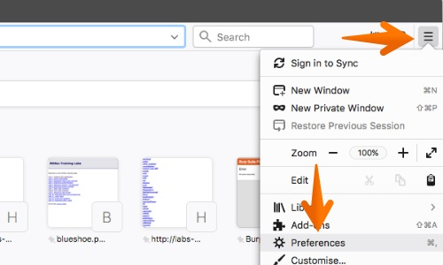
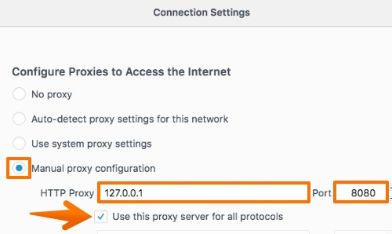
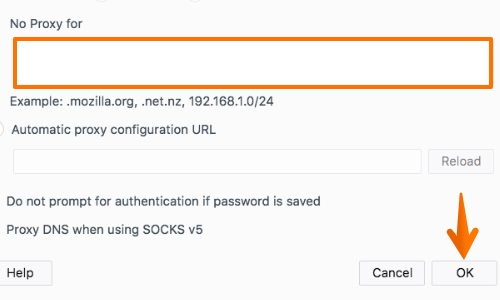

Burpと連携するようFirefoxを設定する
Burpでのテストに使用できるようにFirefoxを設定するには、次の設定手順を実行してください。
Firefoxで、Firefoxメニューに移動し、"設定"または"オプション"を選択します。

"一般"タブを選択し、"ネットワーク設定"までスクロールします。"接続設定"ボタンをクリックします。

"手動でプロキシーを設定する"オプションを選択します。
"HTTPプロキシー"フィールドに、Burpのプロキシリスナーのアドレス(デフォルトは127.0.0.1)を入力します。
次に"ポート"フィールドに、Burpのプロキシリスナーのポート番号(デフォルトは8080)を入力します。"すべてのプロトコルでこのプロキシを使用する"をチェックします。

"プロキシなしで接続"フィールドをすべて削除します。"OK"をクリックしてすべての設定ダイアログを閉じます。
